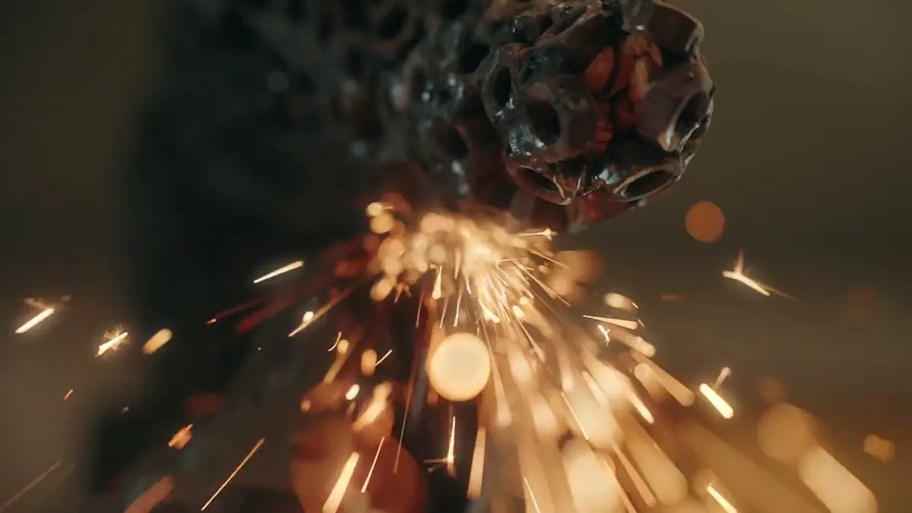
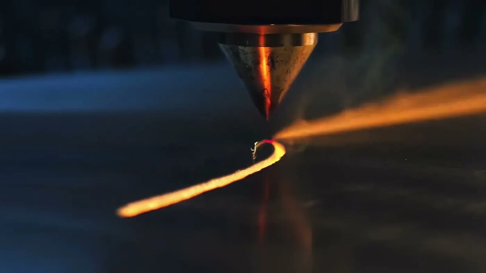

Arbeiten bei Baudrexl Metalltechnik.Jobs · Peiting
Wenn du lieber ein ganzes Teil baust als immer denselben Handgriff zu machen, melde dich bei uns.
Melde dich, auch ohne Stellenanzeige.
Du kommst aus dem Metallbau, der Konstruktionsmechanik oder einem anderen Metallberuf und arbeitest gern an Laser, Abkantbank oder Schweißgerät? Dann ruf an oder schreib uns kurz. Ob und wann gerade ein Platz frei ist, sagen wir dir direkt.
Für den ersten Kontakt reichen ein paar Sätze zu dir und dazu, was du schon kannst. Einen Lebenslauf kannst du später nachreichen.
08861 930900
Was dich bei uns erwartet.
Laser, Abkantbank, Schweißplatz
Hier entsteht das Teil von der Zeichnung bis zur Baugruppe — nicht nur ein einzelner Handgriff.
Werkstatt in Peiting
Arbeiten im Landkreis Weilheim-Schongau, am Zeißlerweg in Peiting.
Kopf und Hand
Zeichnung lesen, rüsten, schneiden, kanten, schweißen, prüfen — wer beides mag, passt hierher.
Direkter Draht
Fragen klärst du mit den Leuten, die den Betrieb führen.
Fragen zur Bewerbung
Wie läuft eine Bewerbung ab?
Anrufen oder kurz schreiben. Danach lernen wir uns kennen und reden über die Arbeit.
Welche Unterlagen brauche ich?
Für den ersten Kontakt keine. Ein Lebenslauf und Zeugnisse können später nachkommen.
Ich komme aus einem anderen Metallberuf — passt das?
Sprich uns an. Entscheidend ist, was du an Laser, Abkantbank oder Schweißgerät schon kannst.

Klingt nach dir?
Ruf einfach an. Ein Gespräch sagt mehr als jede Bewerbungsmappe.
- Anrufen oder schreiben
- Kennenlernen
- Arbeiten in Peiting